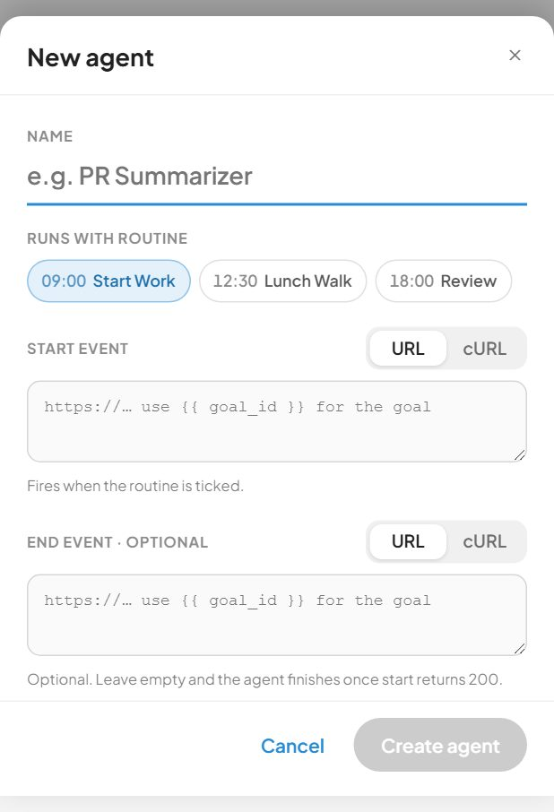
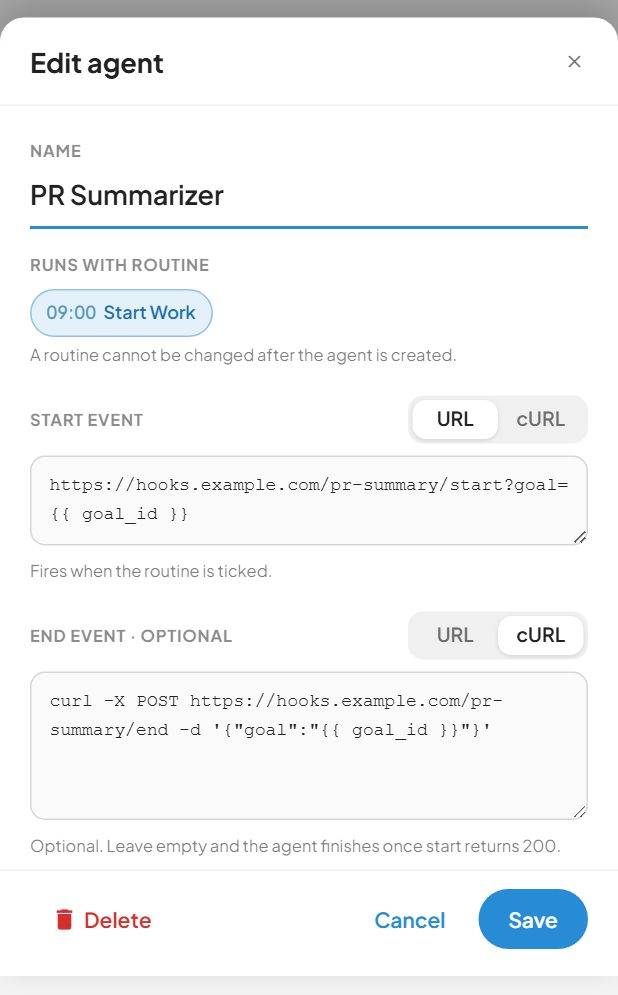
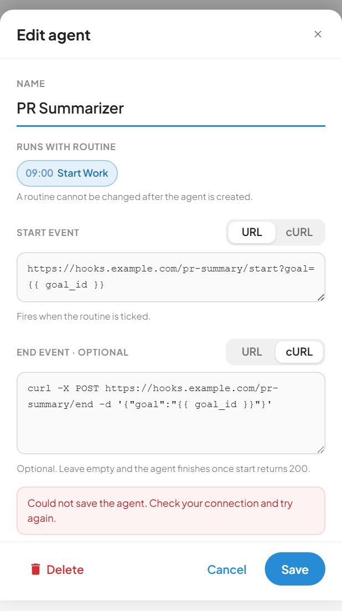
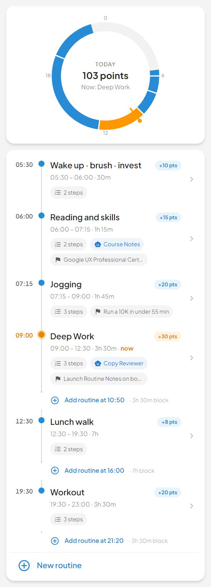
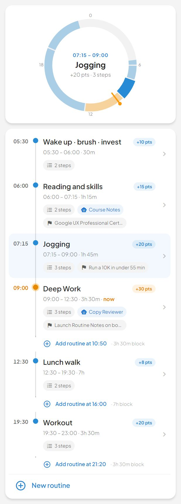
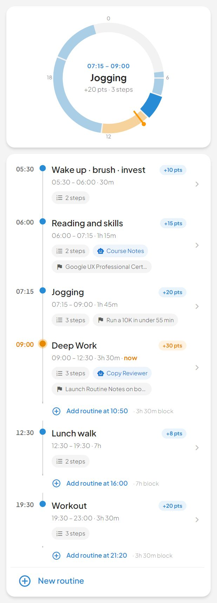
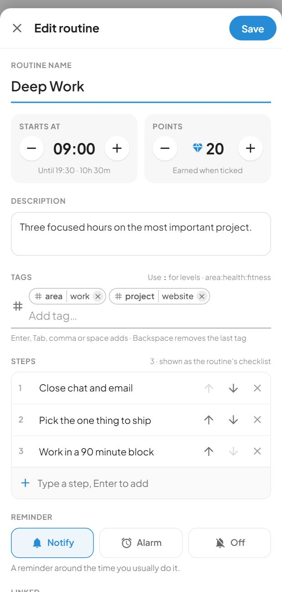
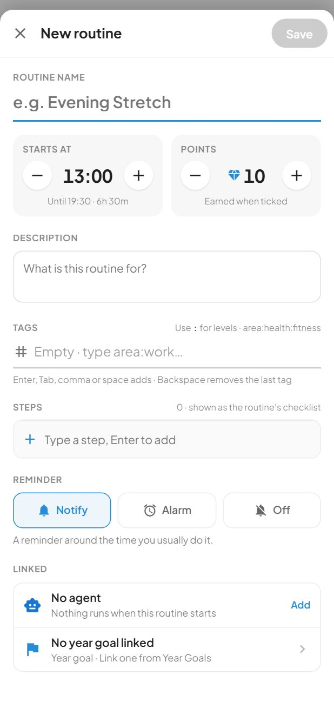
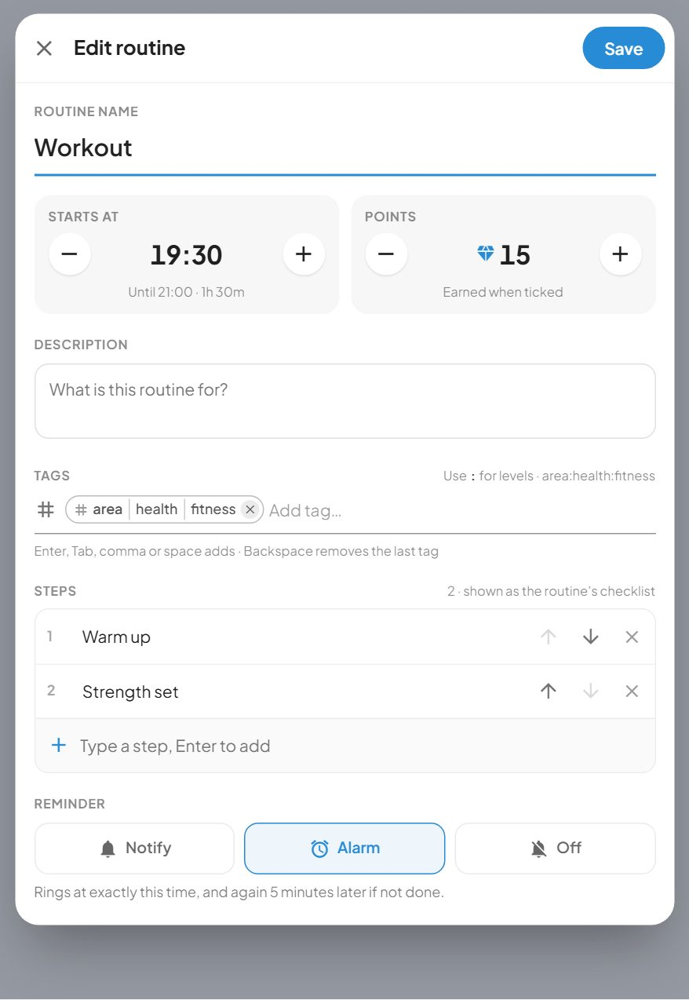

The day dial, timeline and routine editor. 3 in use. Rendered from Storybook on the app background (#f4f4f4). Generated by tools/build-canvases.js; do not edit by hand.
New agent / Edit agent — one form, three presentations, from `packages/design/Agents.dc.html`. The chassis `ResponsiveSheet` supplies them (phone bottom sheet · tablet 860px · desktop 720px), and `SlidingSwitch` supplies the URL / cURL toggle, so neither is redrawn here.



The Routines screen's body: a 24-hour day dial and the timeline it shares its data with (packages/design/Routines.dc.html).



The Routines editor (packages/design/Routines.dc.html § the sheet).


